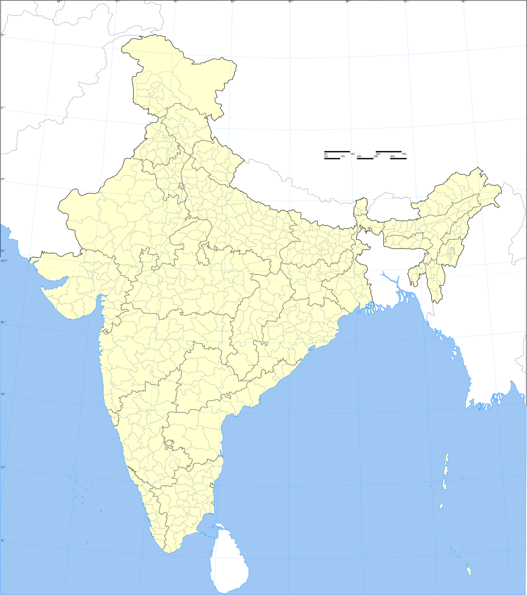

📌 Click any red marker on the map, or a card below, to view the NDWI and Coral Index results for that location.
Study Locations
All sites mapped using Sentinel-2 MSI imagery (ESA / Copernicus programme).

Currently, only Netrani Island outputs are available. Lakshadweep and Grande & Bat Islands will be available soon.
All Study Sites
Click a site to view its NDWI and Coral Index images (January 2026).
Karnataka · Arabian Sea
Netrani Island
→
Goa · Arabian Sea
Grande & Bat Island
→
Gujarat · Gulf of Kutch
Mora, Bahyadar, Pirotan & Kalubhar Tapu
→
Bay of Bengal
Ramsagar & Chuksar Island
→
Odisha · Bay of Bengal
Abdul Kalam Island
→
Tamil Nadu · Gulf of Mannar
Deepu Sagar, Vaalai Theevu, Valimunai, Anaipaar & Ram Setu
→
UT Lakshadweep · Arabian Sea
Lakshadweep Islands
→
UT Andaman & Nicobar
Andaman & Nicobar Islands
→